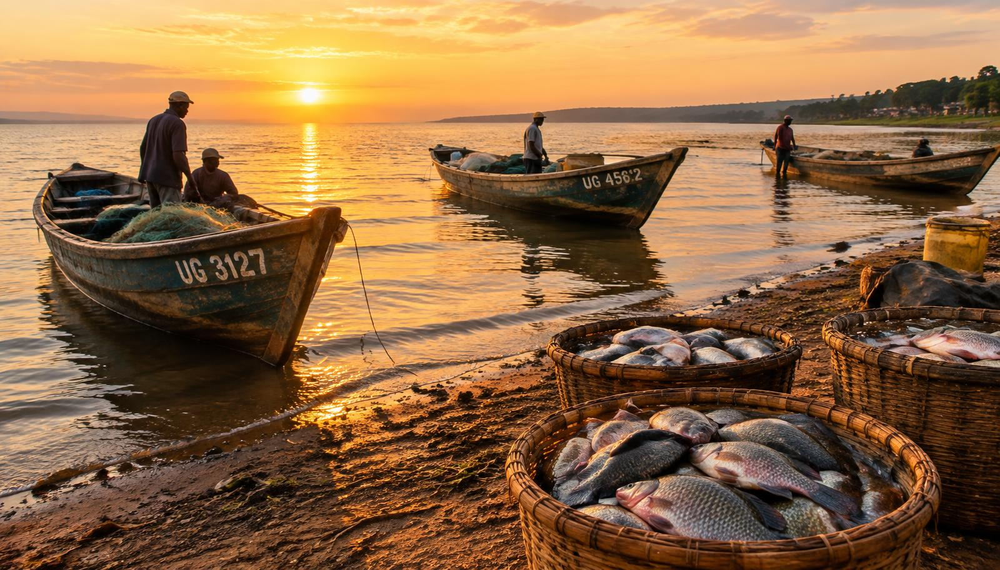

Connecting the lake to Kampala's tables
We make fresh, fairly-priced fish easier to order while creating dependable market access for fishing communities.

A simpler way to buy fresh fish
Kampala Fresh Fish Delivery was created to replace uncertain phone calls and WhatsApp messages with a clear, convenient ordering experience. Customers can see available varieties, current prices and stock before placing an order.
Our service brings together fishermen and fish suppliers from Entebbe, Jinja, Mukono and Kalangala, then organizes cleaning, packing and delivery for customers across Kampala.
Explore today's catch →Sourced through trusted landing sites
Each sourcing location contributes something special to our daily selection.
Entebbe
Fresh and smoked tilapia sourced from Lake Victoria fishing communities.
Jinja
Whole Nile perch and carefully prepared fillets for homes and food businesses.
Mukono
Fresh and smoked African catfish from local fish suppliers and ponds.
Kalangala
Sun-dried mukene supplied in household quantities and bulk sacks.
Fish for every kitchen
Our range includes fresh tilapia, Nile perch, African catfish, ready-to-cook fillets, smoked fish and dried mukene. Product cards show prices, quantities and sourcing locations so customers can order with confidence.
We serve households planning family meals as well as restaurants, hotels, schools, wholesalers and other businesses that need a reliable fish supply.
Who we serve
- HouseholdsConvenient everyday orders
- RestaurantsConsistent portions and supply
- HotelsScheduled standing orders
- BusinessesBulk and wholesale options
Our vision and mission
Our vision
To be Kampala's most trusted digital link between fishing communities and customers, known for freshness, fairness and dependable delivery.
Our mission
To make quality lake fish easy to discover and order, handle every delivery with care, and help suppliers earn fair value through better access to the Kampala market.
Quality at every step
Source
We work with known fishermen and suppliers.
Prepare
Fish is cleaned, weighed and packed on ice.
Organize
Orders and delivery details are recorded clearly.
Deliver
Customers can follow each delivery stage.